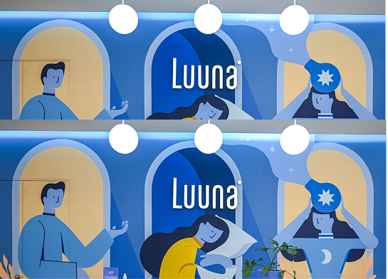
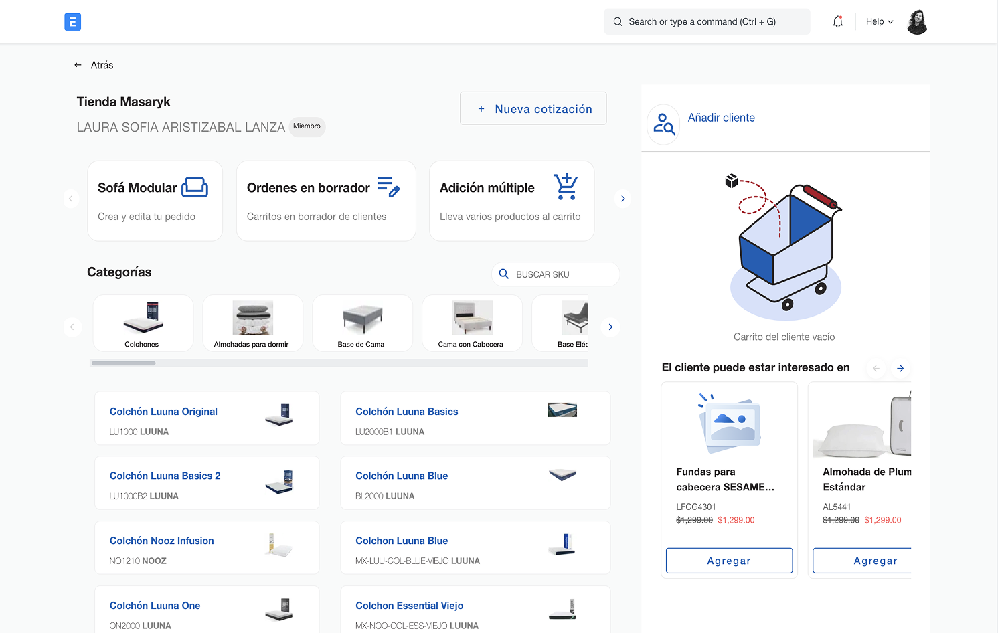
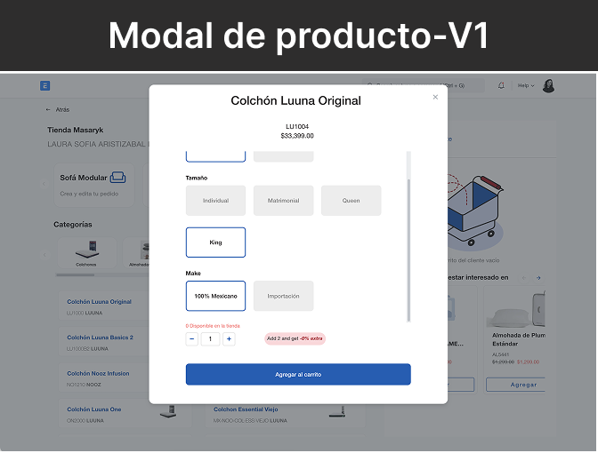
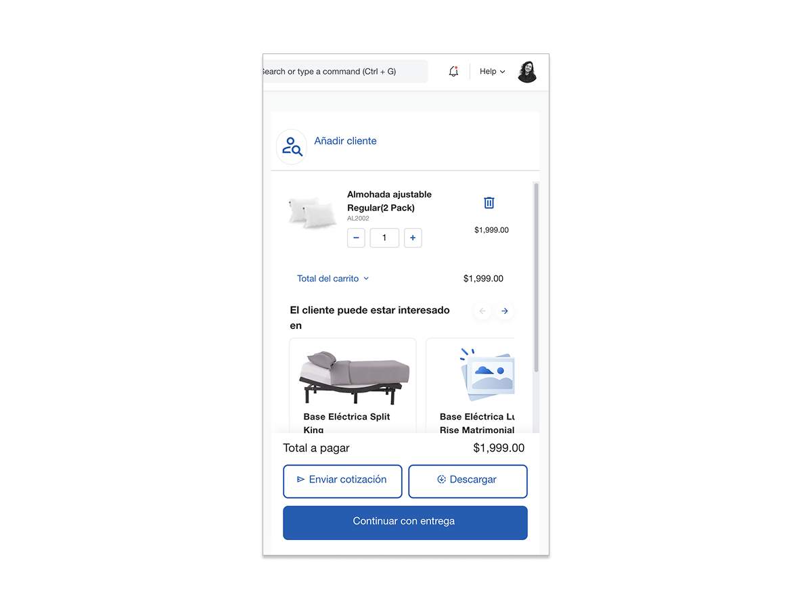
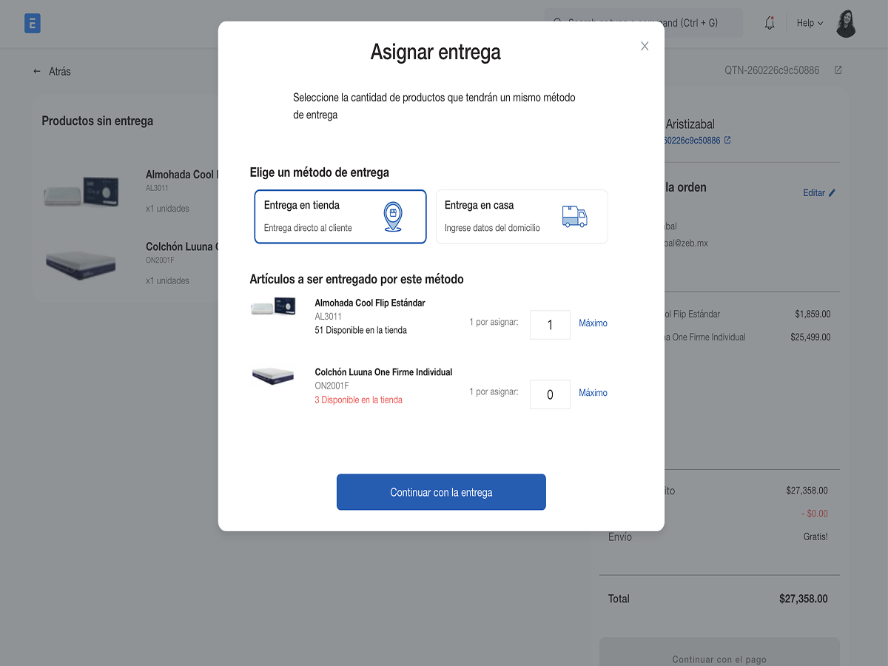
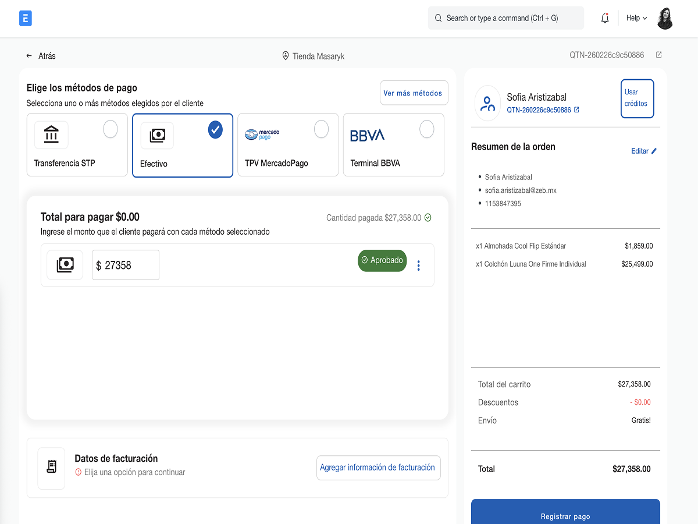

Zebrands · ZePOS · Dec 2024 – Apr 2026
200 stores, zero downtime.
A system redesigned to scale.
From a fragile POS with critical dependencies to an omnichannel platform. End-to-end redesign of architecture, flows, and real-time operations — launched before Buen Fin with zero incidents.
Sync errors
Users with higher perceived speed
Time to create an order
Stores with zero launch incidents
Context
Zebrands is an omnichannel retail company with operations in Mexico and Brazil. As part of its multi-store ecosystem, it runs its own point-of-sale system used in more than 200 physical stores. In 2024, I led the full platform redesign, collaborating with a cross-functional team of frontend, backend, architecture, and technical leadership.
The project emerged after identifying critical performance, stability, and operational issues during high-demand events like Hot Sale. The work wasn't just about redesigning the interface — it meant rethinking a system capable of supporting real-time, multi-store transactional operations, reducing friction on the sales floor, and preparing the platform to scale sustainably.
The system in contextLuuna Brand

Brand context and product ecosystem within Zebrands
Project summary
The problem
The POS had high load times, an overloaded catalog, inconsistencies across modules, and a critical dependency on the RPNext ERP. Sales staff could cause system crashes through everyday actions.
The goal
Turn the fragile system into a scalable platform by optimizing the catalog, availability, and operational flows — improving service speed, stability, and in-store experience.
My role
I led the UX strategy and experience as the sole Product Designer UX/UI for most of the project — defining flows and architecture, and collaborating on implementation in live operations.
The impact
A faster, more stable system. Successful rollout to 200+ stores before Buen Fin 2024 — the most critical high-demand event of the year — with zero major incidents.
System architecturedesigning for a living system
Architecture diagram — flows between catalog, cart, payments, and ERP
Critical decisions
Research with incomplete information
Solo store visits, direct interviews with sales staff, and SLA tracking with monitoring tools — while the technical team was focused on Brazil. Field research revealed failure patterns invisible from the office.
Design System independent from the ERP
Building a design system that didn't depend on RPNext's release cycle — a decision that unblocked team velocity and enabled parallel iteration without relying on legacy architecture.
Prioritizing performance over complexity
Designing for intermittent connectivity. Prioritizing load times and operational stability before adding new features. The system had to work in stores with limited network infrastructure — zero margin for error.
How did we work under pressure?
Field research
Store visits, staff interviews, error detection, and SLA tracking via monitoring tools.
Event Storming
Workshop to map the domain and redefine event architecture alongside backend.
Parallel design
Flows and prototyping of the 3 critical flows: catalog, cart, and payments/shipping in short cycles.
Pilot and rollout
Pilot testing, fast adjustments, and progressive rollout to 200+ stores before Buen Fin.
Operational impactbefore vs after timing
Performance
Error reduction
Trust and adoption
The POS was rolled out progressively — pilot stores → validation → full flow — scaling to 200+ stores before Buen Fin 2024 with no major operational incidents.
Before vs Aftercritical flows

- Slowness — the catalog creates operational bottlenecks
- Overloaded with discontinued products
- Passive search with no filters
- Missing visibility of key product information
- Optimized search with multiple filters
- Only active, relevant products
- Intuitive, multichannel product cards
- Key information visibility resolved

- Overload of non-essential information
- Falta de elementos para el flujo critical
- Unclear information architecture
- Intuitive card design with improved architecture
- Visual support for relevant product features
- Integrated availability — no external platforms needed

- Overload of non-essential information
- Falta de elementos para el flujo critical
- Unclear information architecture
- Improved information architecture
- Fast, smooth checkout
- Real-time availability visibility

- Flujo critical en un solo modal sin salida
- Insufficient feedback during calculation steps
- Missing assignment and delivery logs
- Fully redesigned flow with real-time configuration
- Integrated inventory services
- Redesigned cards to speed up in-store sales

- Disorganized payment methods with no hierarchy
- Feedback insuficiente en procesos criticals
- Unclear error states with no recovery path
- Simple, step-by-step guided flow
- Clear, real-time states
- Secure experience with clear exit states
What this project changed in how I design
Designing for resilient systems
Designing complex systems means thinking beyond screens — understanding architecture, operations, scalability, and how every interaction directly affects people working under real-time pressure.
Performance is also UX
It's not just about making the user happy on the ideal path. Thinking about failures, states, and recovery is as much a part of design as the main flow.
Architecture shapes experience
Backend and UX aren't separate worlds. Collaboration is key — every technical decision has direct consequences on how the product feels and functions.
Scaling requires clarity
Simple systems, clear metrics, and solid documentation make it possible to grow without losing control of operations or product consistency.
“Designing complex systems taught me that information architecture shapes experience — every technical decision has direct consequences for the people who use the product every day.”
Melany Olivares